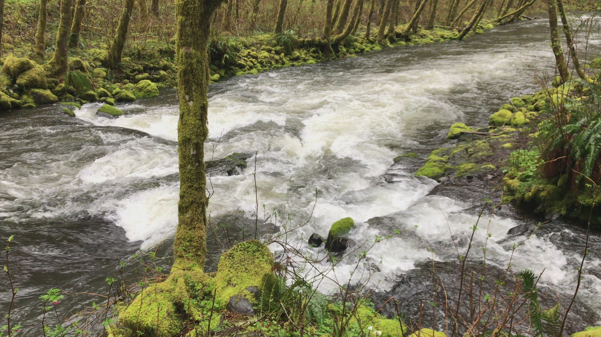
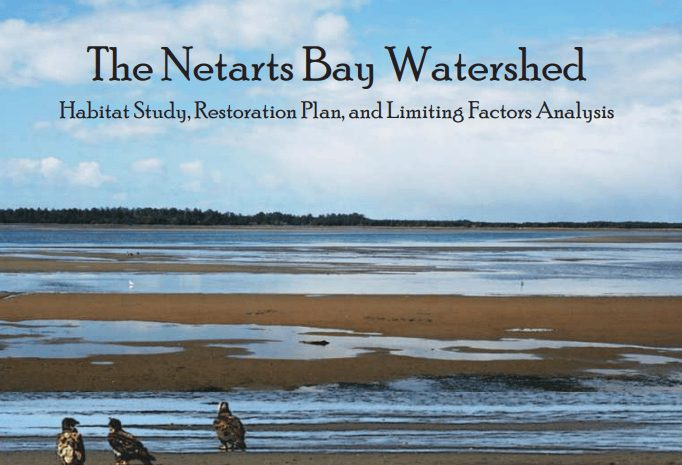
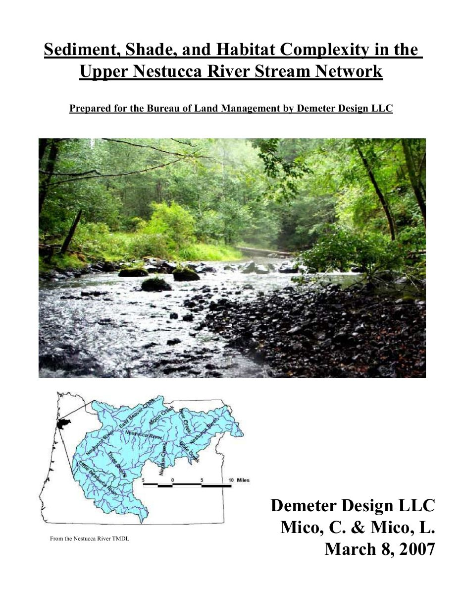

Demeter Design · Oregon
Watershed field assessment
A scroll through the work — creek, map, report — then a quote for your reach.
Demeter Design · Oregon
A scroll through the work — creek, map, report — then a quote for your reach.

01 · Walk the reach
Channels, floodplains, restoration sites. Water, sediment, shade, habitat structure — on the ground, not from the office hope.

02 · Draw the path
Drag the map. Follow how flow, form, and barriers connect — precursor to engineering, not a stamp.

03 · Hand it over
Figures and plain language for the board packet or the grant file. Real published work: Nestucca, Netarts, Tillamook Bay, and more.
Request a quote
We reply with scope and timeline. Fieldwork follows the agreed scope. Mail goes to Graphic Oregon, parent of Demeter Design.
Also public: Tillamook Bay · Upper Nestucca · Netarts